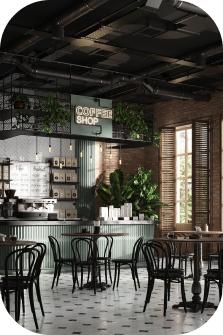
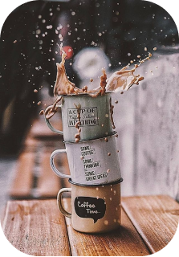
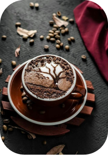

The Beautiful PlaceCaffeine Haven is a breathtakingly beautiful café. From cozy seating arrangements to soothing lighting, every element has been curated to create an atmosphere that promotes relaxation and fosters meaningful connections. Whether you're seeking a peaceful moment alone or a lively gathering with friends, our environment sets the stage for an unforgettable coffee experience that leaves you refreshed and inspired. |
 |
|  |
Feel The CoffeeAt Caffeine Haven, we invite you to not just taste the coffee but to truly feel it. From the moment you hold the warm cup in your hands, you'll sense the comforting embrace of our carefully crafted brews. As you take that first sip, allow the rich flavors to envelop your palate, awakening your senses and transporting you to a world of coffee bliss. |
Unparalleled FlavorAt Caffeine Haven, we pride ourselves on delivering the best taste in every cup of coffee we serve. We source the finest beans from around the world and meticulously roast them to perfection to unlock their full flavor potential. Our skilled baristas expertly craft each beverage, ensuring that every sip delights your taste buds with rich, nuanced flavors and a smooth, satisfying finish. |
 |